Con las funciones del X6100 de IU1WXY, explicadas para radioaficionados
Esta ROM nace del firmware del X6200 (GUI LVGL + Buildroot) y le incorpora las funciones del X6100 de IU1WXY que la plataforma permite. La idea es tener un QRP de campo completo: los digitales, CW, el clúster, SOTA/POTA y todo lo que hace falta cuando estás en un cerro con una batería y un cable de 20 metros.
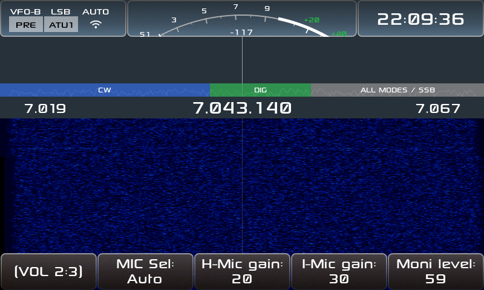
Lo que vas a encontrar acá: el equipo con 8 temas, plan de banda IARU, S-meter con aguja, WFM, grabación, Bluetooth (CAT y auriculares), wfview, configurador web, control remoto desde el teléfono, FT8/FT4, WSPR, JS8, SSTV, WeFax, NavTex, RTTY, CW Keyboard y CW Trainer, clúster DX con spots sobre el waterfall, Field Ops (SOTA/POTA) y anuncios por voz en español.
Lo que necesitás
Regla de oro: todo lo tuyo vive en la partición
DATA (params.db con los
ajustes, qso_log.db con los contactos,
themes/, msg/, rec/ y
app_logs/). Esa partición nunca se toca al
actualizar. Igual, respaldala antes de cada actualización.
DATA a la PC..img en la microSD
(dd, balenaEtcher, Raspberry Pi Imager). Trae dos
particiones: BOOT (arranque) y rootfs (el
sistema).DATA. Si ya existe una
DATA con formato FAT, la monta sin
formatear: tus datos sobreviven.DATA y
reiniciá.x6200_r1cbu_<version>.tgz a la raíz de
DATA.S02update respalda (backup_*.tgz), aplica la
actualización y borra el tgz.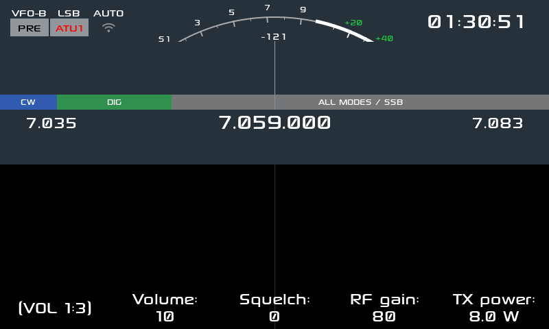
| Zona | Qué te dice |
|---|---|
| Arriba a la izquierda | VFO (VFO-A/VFO-B), modo
(LSB/USB/CW/CWR/AM/FM/DIG), AUTO, PRE
(preamplificador) y ATU1 |
| Arriba a la derecha | Hora UTC |
| El arco | S-meter de S1 a +40 dB, con la lectura en dBm |
| La franja de colores | Plan de banda IARU: CW, DIG y ALL MODES, con los segmentos de la banda |
| Los números grandes | Los extremos de la banda y, en el centro, la frecuencia del VFO |
| La zona oscura | Waterfall; arriba, la franja con las marcas de los spots del clúster |
| Los botones de abajo | Volumen, Squelch, RF gain, TX power y las páginas de botones de función |
Las páginas de botones. La fila de abajo tiene 5 botones y el primero es el cambiador de página: apretarlo pasa a la página siguiente, mantenerlo vuelve a la anterior. Hay varios grupos de páginas (VOL, MFK, MEM y APP) y se cambian con la tecla APP. En las 6 páginas APP están todas las aplicaciones, 4 por página (la tabla está en la sección 6).
Cambia la frecuencia del VFO activo y anuncia la frecuencia
por voz si el modo de voz está activo. Con
Freq acceleration activado, girando rápido salta más. El
paso se cambia con las acciones Step up / Step down (o
desde las páginas de botones).
Girala para el modo activo y apretala para cambiar de modo. Los modos son:
| Modo | Qué ajusta |
|---|---|
| VOL | Volumen de audio |
| RFG | RF gain del receptor |
| SQL | Squelch |
| FILTER LOW / HIGH / BW | Filtro de recepción: corte bajo, corte alto y ancho |
| PWR | Potencia de transmisión |
| MIC / HMIC / IMIC | Ganancia de micrófono: general, de mano y de línea |
| MONI | Nivel del monitor (te escuchás en TX) |
| VOICE LANG | Idioma de los anuncios (español / inglés) |
Girala para cambiar el valor del modo activo, apretala para cambiar de modo. Los modos y sus parámetros:
| Grupo | Modos del MFK |
|---|---|
| Espectro | Min level, Max level, FFT decimation, FFT width, Spectrum beta, Peak hold, Peak speed, Spectrum fill, Spectrum peak |
| Recepción | DNF (center frequency, width), NB (level, width), NR (level), AGC (control, hang, knee level, slope level), ATT switcher, Antenna selector |
| CW | CW key speed, CW key mode, Iambic mode, CW key tone, CW key volume, CW key QSK time, CW key ratio, CW key train, CW tune, CW decoder (SNR level, noise beta, peak beta) |
| Otros | Comp (compresor de audio), Charger mode, Peak hold time |
ATU para habilitarlo (aparece
ATU1).ATU (o usá la acción ATU
tune) para sintonizar; el equipo busca la mejor red de
adaptación.Se entra con la acción APP Settings (o desde la página APP 5:6). Los ajustes están agrupados por tema en 8 secciones y la fila de botones de abajo son tabs: cada botón salta a su sección, que queda arriba de todo y con el foco en su primer campo. El tab en el que estás queda marcado.
Son 8 tabs y en la fila entran 4 más el botón de página, así que hay
dos páginas: la primera tiene
Reloj · Pantalla · Info · Audio · Mas > y la segunda
Espectro · Operacion · Apariencia · Acciones · < Mas. El
botón de la punta pasa a la otra página de tabs.
| Tab | Parámetros | Para qué |
|---|---|---|
| Reloj | Day, Month, Year / Hour, Min, Sec / Clock view / Timeout Clock, Power, TX | Hora UTC de los decodificados (también la ajusta el NTP si hay red) y qué muestra el reloj |
| Pantalla | Timeout, Brightness / Buttons brightness / S-meter needle / Band plan | Apagado automático, brillo de pantalla y de botones, aguja del S-meter y plan de banda |
| Info | Mag Freq, Info, ALC | Qué muestra cada zona de la barra superior |
| Audio | Line-in, Line-out / audio gain / Audio enhance / Speaker mode / Voice mode, rate, pitch, volume | Entradas y ganancias, realce de audio, modo del parlante y los anuncios de voz |
| Espectro | Spectrum auto min, max / Waterfall auto min, max / Waterfall line, zoom / Waterfall smooth scroll / Waterfall battery mode | Ajuste automático de niveles, líneas y zoom del waterfall, desplazamiento suave y ahorro en batería |
| Operacion | Freq acceleration / Charger / Cluster column / Bluetooth / Discoverable (CAT) / Devices / wfview server / Transverter | Aceleración del dial, cargador, columna del clúster, Bluetooth y su panel de dispositivos, servidor wfview y transverter |
| Apariencia | Theme / Font | Los 8 temas y la familia de fuente (se aplican al reiniciar) |
| Acciones | APP long press / MIC long press | Asignar acciones a las pulsaciones largas: Screenshot, Screen rec, Mute, Voice mode, Battery info, ATT, PRE, ATU, ATU tune, APP Bands y las demás apps |
Se abre con el botón APP (o asignando la acción del app
a un botón). En las capturas se ve el diálogo del app sobre la pantalla
principal, tal como queda en el equipo.
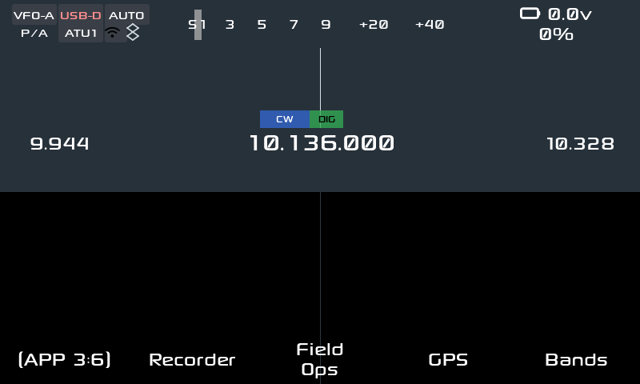
Todas las apps están alcanzables. La tecla APP entra al grupo y el primer botón de abajo cambia de página: son 6, con 3 o 4 apps cada una.
| Página | Apps |
|---|---|
| APP 1:6 | FT8 (y FT4), JS8, WSPR, RTTY |
| APP 2:6 | SSTV, WeFax, NavTex, Clúster |
| APP 3:6 | Recorder, Field Ops, GPS, Bandas |
| APP 4:6 | CW Kbd, CW Trainer, Eq, Status |
| APP 5:6 | Ajustes, Callsign, QTH |
| APP 6:6 | WiFi, Bluetooth, SWR Scan |
Además de las páginas, cada app está en la lista de acciones de Ajustes → Acciones y se puede asignar a un botón o a una pulsación larga. Es el camino para las que no tienen botón propio en las páginas: About, por ejemplo, se abre desde ahí (o asignándola).
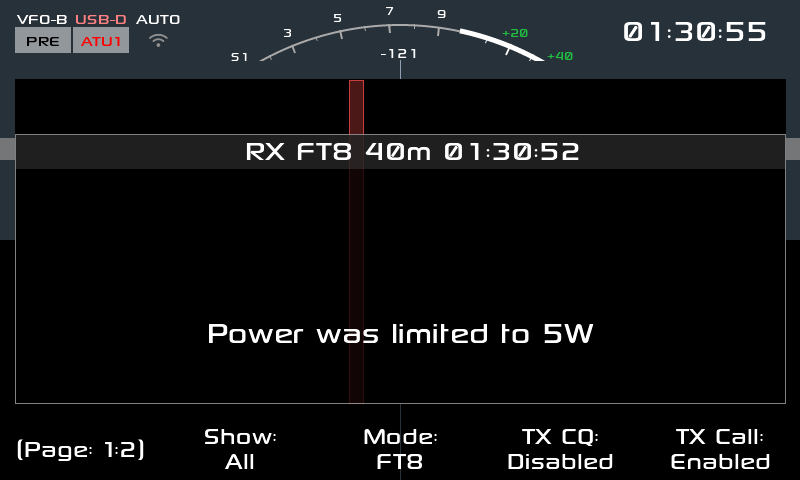
El modo digital más usado: ciclos de 15 segundos, decodificado y transmisión automática o asistida. Sirve para hacer contactos con señales que no escucharías ni en sueños, con 5 W y un cable cualquiera.
Cómo se usa: elegí banda y modo DIG;
poné tu indicativo en Ajustes (Callsign); abrí FT8 y
elegí la frecuencia de llamada de la banda; para llamar CQ usá el botón
de CQ, y para contestar tocá una fila de la lista de decodificados. El
app arma la secuencia y transmite sola. Podés subir los decodificados
por UDP a un programa de la PC (ver docs/FT8_UDP.md).
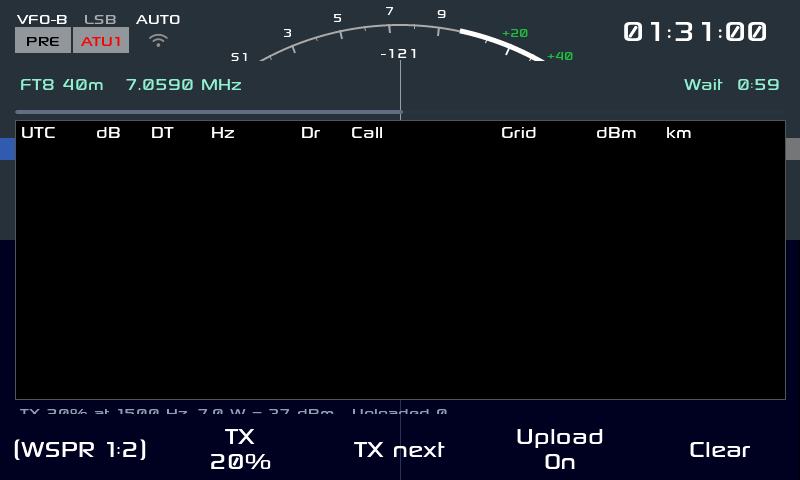
Baliza débil señal: transmite y escucha reportes de 2 minutos para ver hasta dónde llega tu señal con muy poca potencia. Es la mejor forma de probar una antena nueva.
Cómo se usa: elegí el porcentaje de tiempo de TX
(wspr_txpct) y la banda; el app transmite en los slots
elegidos y decodifica el resto. Subí los spots a
WSPRnet con tu indicativo y grilla; los reportes quedan
en el log del app.
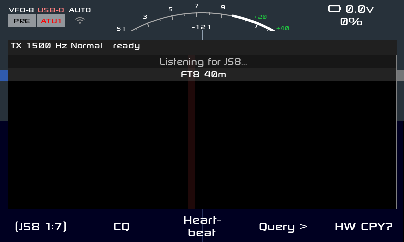
Mensajería digital de teclado a teclado, tolerante a señales flojas, con modos de velocidad normal, rápido y turbo. Sirve para pasar un mensaje corto o tu posición a otro colega.
Cómo se usa: elegí el grupo de llamada y la banda, y escribí en el teclado; el app decodifica las estaciones que te responden y muestra el mapa de estaciones conocidas. Permite mandar tu posición (la toma del teléfono o del web) y guardar el QSO en el log.
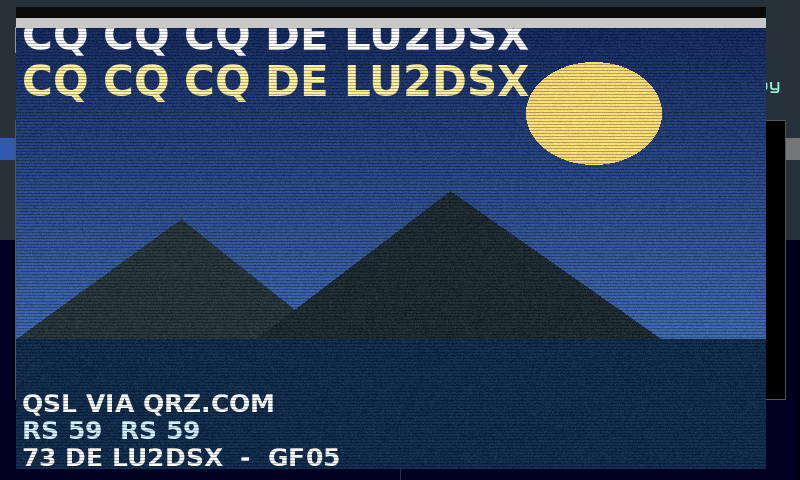
Imágenes por radio en modo analógico: mandás y recibís una foto dibujada línea por línea. Los modos más usados son R36 y R72 (los que se usan en 20 metros).
Cómo se usa: abrí la app y elegí el modo
(R8BW, R36, R72, M1,
M2, S1, S2); para recibir, sólo
dejá el receptor en la frecuencia y el app va dibujando la imagen; para
transmitir, elegí la imagen y arrancá la TX (el app respeta el PTT). Las
imágenes quedan guardadas en DATA.
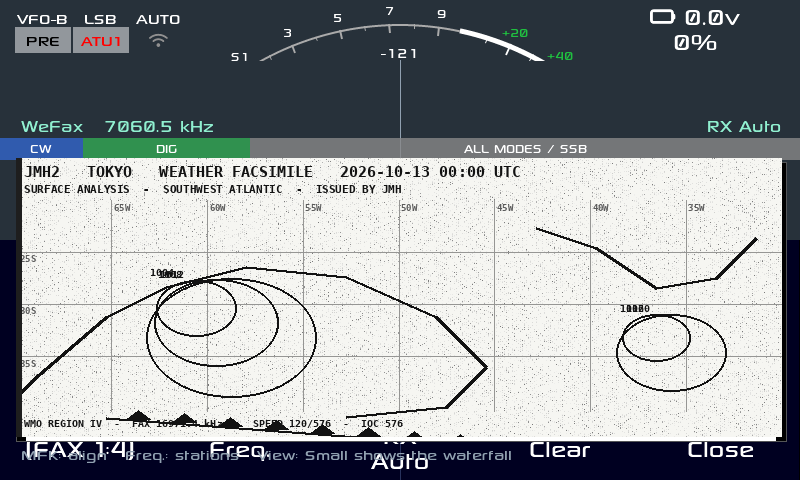
Facsímil meteorológico: las cartas que transmiten las estaciones de radiofax en HF. Se reciben en blanco y negro y se leen como un mapa del tiempo.
Cómo se usa: elegí la frecuencia de la estación y el modo (blanco/negro o escala de grises), y esperá el comienzo de la carta; el app alinea la imagen. Con la perilla del MFK (o los botones Align y Tilt) corregís el alineado y la inclinación: girando se ve cómo se endereza la imagen; después guardás el PNG.
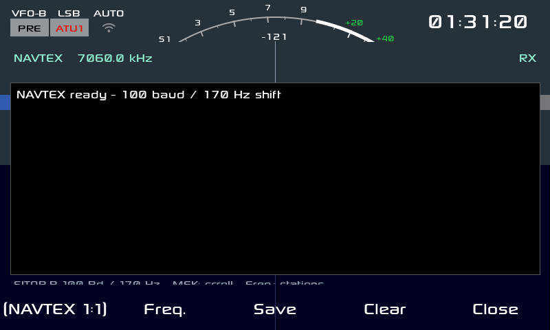
Avisos marítimos en 518 kHz: meteorología, avisos a los navegantes y búsquedas. Es la versión en texto del radiofax y con muy poco ancho de banda.
Cómo se usa: sintonizá la frecuencia de la estación y abrí el app; el texto decodificado aparece en pantalla y se guarda por estación. Es útil también en la costa para saber el estado del mar.
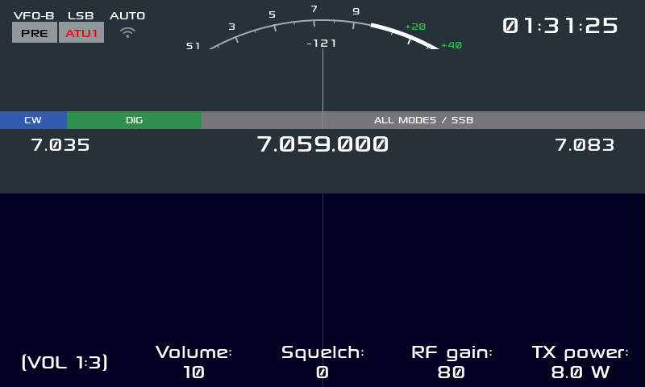
Los spots de DX en vivo: qué estaciones están en el aire y en qué frecuencia. Es la herramienta de caza mayor, y con la columna y las marcas sobre el waterfall se convierte en un radar.
Cómo se usa: configurá servidor, puerto y tu indicativo (el clúster lo pide para entrar), elegí los filtros (modos, bandas, actividad y antigüedad) y conectá. Los spots aparecen en la columna de la derecha: al tocar uno, el equipo sintoniza esa frecuencia y ajusta el modo. Las marcas sobre el waterfall muestran los que caen dentro del ancho que estás viendo.
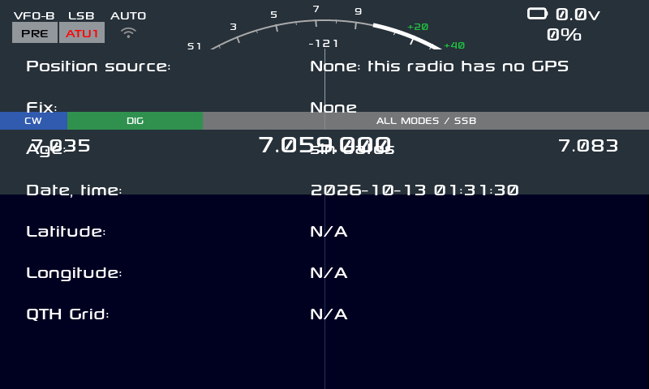
Muestra de dónde viene la posición y la grilla QTH, que es lo que Field Ops y JS8 necesitan para reportar dónde estás. El X6200 no trae receptor GPS: la posición la manda el teléfono o el configurador web.
Cómo se usa: mandá la posición desde el teléfono
({"cmd":"location","text":"-34.60,-58.38"}) o desde el web.
El app muestra la fuente (Phone / None), la
edad del dato, la fecha y hora, latitud, longitud y la
grilla; si no hay nada, lo dice tal cual en vez de
inventar satélites.
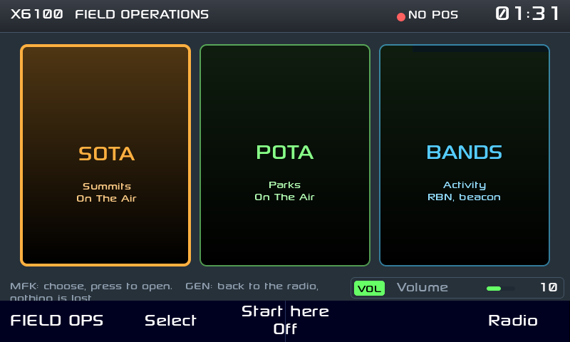
La app para salir al campo: referencias SOTA y POTA, log de contactos y self-spot. Está pensada para que en la cumbre no tengas que pelear con nada. Está en APP 3:6.
Cómo se usa: elegí la referencia (la lista viene incluida, se puede usar sin internet), poné tu indicativo, y activá el self-spot para avisar a pota.app en qué frecuencia estás. Cada contacto se guarda en el log ADIF (exportable y subible a QRZ). El CQ de voz graba tu llamado una vez y lo emite por PTT cuando lo pedís.
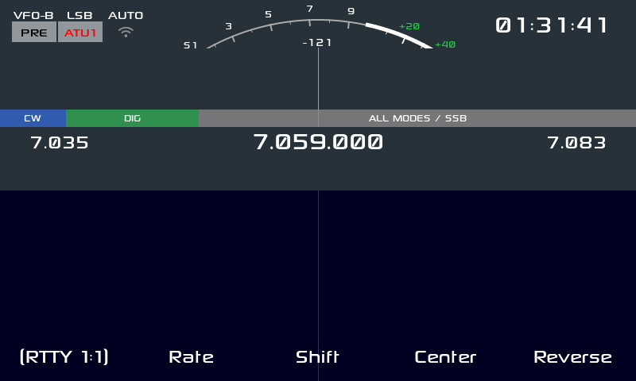
El digital clásico de los concursos: Baudot a 45 baudios, con shift de 170 Hz. Todavía se escucha en 40 y 20 metros y sigue siendo divertido de decodificar.
Cómo se usa: elegí centro, shift y velocidad
(rtty_center, rtty_shift,
rtty_rate), escribí en el teclado y el app transmite; lo
que llega se decodifica en pantalla. Es ideal para probar el filtro
angosto del receptor.
CW)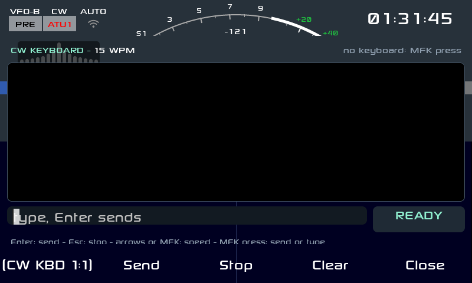
Telegrafía sin manipulador: escribís en un teclado USB o Bluetooth y el equipo sale al aire en CW con tu velocidad, tono y peso. Ideal para el campo (nada que enchufar), para quien no puede usar la paleta por una lesión, o para mandar un texto largo sin equivocarse.
Cómo se usa: abrí la app (página APP 4:6, o la acción APP CW Keyboard), escribí y mandá. Una línea sale con Enter; lo que llega se decodifica en pantalla. La velocidad, el tono y el peso se ajustan con el MFK (CW key speed, CW key tone, CW key ratio).
| Botón del pie | Qué hace |
|---|---|
| Send | Manda la línea escrita |
| Stop | Corta la transmisión |
| Clear | Borra el texto |
| Close | Cierra la app |
Para practicar recepción: el equipo te toca CW y vos copiás. Arranca con el modo Learn (Koch) —el clásico para aprender por etapas, sin contar puntos— y sube la velocidad a medida que acertás. Corre en el modo train del keyer: usa el sidetone y NO transmite, así que no sales al aire mientras practicás.
Cómo se usa: abrí la app (página APP
4:6 o la acción APP CW Trainer) y elegí en el pie el
modo y la dificultad; hay 3 páginas de botones (CWT 1:3,
2:3 y 3:3). Antes de empezar, poné el keyer en
modo train (CW key train en el MFK, grupo CW).
Aviso (defecto conocido). En esta versión, usar el CW Trainer deja el equipo en un bucle de reinicio de la GUI: la pantalla se reinicia cada medio minuto y se pierde lo que estabas haciendo. Está identificado y reportado (issue #19 del repositorio), con la causa medida: un desborde de buffer en el camino de audio al decodificador CW. Si te pasa: salí de la app y reiniciá el equipo; mientras no se arregle, conviene practicar recién arrancado, o usar el CW Keyboard para transmitir y practicar la recepción “en el aire”.
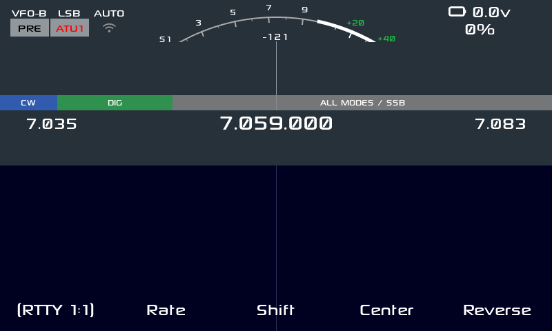
La vista de bandas: los límites de cada banda, la propagación estimada y los parámetros guardados por banda y modo. Sirve para moverse rápido entre bandas sin pasar por el dial.
Cómo se usa: abrí la app (página APP 3:6), mirá las barras de cada banda (HIGH / FAIR / GOOD, con los spots del clúster y del RBN de los últimos minutos) y tocá la banda; el equipo cambia manteniendo el modo y sus ajustes. Cada banda recuerda su última frecuencia, filtro y estado del ATU. Use band cambia a la banda elegida, y Test beacon emite un CQ de prueba para que el RBN te escuche y veas hasta dónde llegás (transmite: hacelo con antena conectada).
Graba el audio del receptor y lo reproduce, para dejar registrado un contacto difícil, un identificador de baliza o una señal rara y escucharla con calma después (o mandarla a un colega).
Cómo se usa: abrí la app (página APP
3:6) y usá el pie: Rec y Rec
Stop graban, Play y Play Stop
reproducen, Rename le pone nombre y
Delete borra. Los archivos quedan en
DATA/rec/.
Cinco bandas para tu audio de transmisión: si te reportan que salís muy grave (“gordo”) o muy chillón (“finito”), se corrige acá. Es el ecualizador de la entrada, así que se nota en tu señal de SSB y de AM, no en lo que escuchás.
Cómo se usa: abrí la app (página APP 4:6 o la acción APP EQ), prendé el ecualizador y movés las bandas. Queda guardado y se aplica al equipo.
Tu indicativo, en un solo lugar. Lo usan las apps digitales (FT8/FT4, WSPR, JS8, RTTY), el clúster DX y Field Ops, así que conviene cargarlo antes de estrenar cualquier modo digital.
Cómo se usa: abrí la app (página APP 5:6), escribilo con el teclado y guardá. Si sale en mayúsculas y sin errores, mejor: es lo que va a salir al aire y a los spots.
Tu grilla (locator, por ejemplo GF05xx)
y tu QTH. Sin la grilla, WSPR y el clúster no pueden ubicarte y los
reportes pierden la mitad de la gracia.
Cómo se usa: abrí la app (página APP 5:6), cargá la grilla de 6 caracteres y el texto de tu QTH, y guardá. Podés calcular tu grilla en cualquier página de locator o directamente en el configurador web.
Todo lo que el equipo “cree que tiene”, en una pantalla: la
versión del firmware (v0.1.2-lu2dsx), el
kernel, el adaptador Bluetooth y los emparejamientos
guardados, el nivel de TX, el espacio libre en
DATA, si wfview está prendido y el puerto,
y si hay IP web. Es la pantalla para diagnosticar por
teléfono o por radio: cuando reportes un problema, mirá acá los datos y
anotalos.
Cómo se usa: abrí la app (página APP 4:6). Se lee, no se toca; Close para salir.
Para conectar el equipo a la red de tu casa o al hotspot del
teléfono. Con WiFi andando tenés: control remoto
(http://<ip>/remote), configurador
web (https://<ip>/),
wfview, clúster DX y la hora por
NTP.
Cómo se usa: abrí la app (página APP 6:6), elegí la red de la lista, escribí la clave y conectá. Anotá la IP que te asigna: es la que vas a escribir en el teléfono y en la PC. Si no aparece tu red, revisá que el equipo esté cerca del router o usá el hotspot del teléfono.
Para las tres cosas que hace el Bluetooth acá: CAT (puente serie para la PC), auriculares A2DP (escuchar sin cables) y teclado (para el CW Keyboard y los menús). El paso a paso del pareado —que es donde se traba todo el mundo— está en la sección 7.3; acá van los botones de la app (página APP 6:6):
| Botón | Qué hace |
|---|---|
| Scan | Busca dispositivos (15 s, con cuenta regresiva) |
| RX to HP | Manda la recepción a los auriculares |
| Speaker | Apaga o prende el altavoz del equipo (para no escuchar doble) |
| Auto | Pulsando: auto-conexión del equipo elegido. Manteniendo: desempareja |
| Close | Cierra la app |
Mide la ROE (relación de ondas estacionarias) en 50 puntos a lo largo de la banda y dibuja la curva: sirve para ver dónde resuena tu antena, cuánto ancho tiene y si conviene el ATU. Es la forma rápida de saber si el problema es la antena o el equipo.
Cómo se usa: abrí la app (página APP 6:6) y pulsá Run; la curva se dibuja a medida que barre. Usalo con la antena conectada (la medición necesita RF) y, como siempre: nunca transmitas sin antena o carga fantasma.
La versión del firmware (v0.1.2-lu2dsx)
y los créditos de todo el software libre con el que
está hecho el equipo. Es el dato que hay que mandar cuando se reporta un
problema: sin la versión, no se puede saber qué código estabas
corriendo.
Cómo se usa: no tiene botón propio en las páginas APP: se abre desde Ajustes → Acciones (asignándola a una pulsación larga) o desde el menú de la app de Ajustes. Se lee y se cierra.
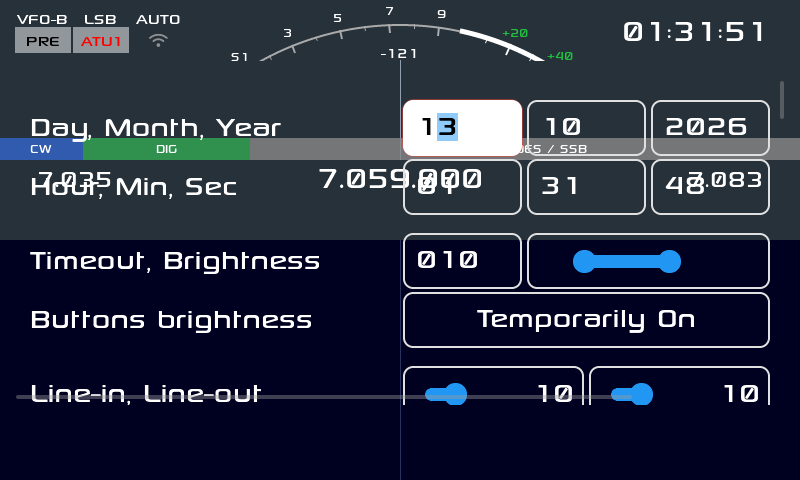
La app de Ajustes es la puerta a todo lo que vimos en la sección 5: reloj, pantalla, info, audio, espectro, operación, apariencia y las acciones asignables a las pulsaciones largas. Está en la página APP 5:6 y el pie funciona como tabs (cada botón salta a su sección).
Todas las apps se pueden asignar a un botón o a una pulsación
larga. En Ajustes → Acciones tenés la lista completa
de acciones, incluidas todas las apps: APP FT8,
APP Bands, APP Bluetooth,
APP Callsign, APP Cluster,
APP CW Keyboard, APP CW Trainer,
APP EQ y las demás. Con eso te armás el equipo a tu manera:
FT8 a un toque corto, el entrenador CW a una pulsación larga, y así.
El equipo abre un socket en /tmp/x6200_remote.sock con
unos 65 comandos.
http://<ip>/remote en el teléfono.{"cmd":"app","text":"FT8"} abre una
app; {"cmd":"band","val":1} cambia de banda;
{"cmd":"mode","val":1} cambia el modo;
{"cmd":"freq","val":14074000} sintoniza;
{"cmd":"location","text":"-34.6037,-58.3816"} manda tu
posición.{"cmd":"cluster_feed","text":"DX de LU1ABC: 14074.0 LU2DSX FT8 2313Z GF05"}
inyecta un spot del clúster (la línea necesita la hora
HHMMZ).https://<ip>/ (certificado
autofirmado: aceptá la excepción).Sirve para tres cosas: CAT (puente serie para la PC), auriculares A2DP y teclado. El estado se ve en la barra de arriba, al lado del WiFi: la runa queda invisible con el Bluetooth apagado, gris cuando está prendido y blanca con auriculares conectados.
Encenderlo: Ajustes → Bluetooth (el interruptor de arriba). Marcá Discoverable (CAT) si vas a usarlo desde la PC.
CAT (SPP): vinculá la PC y elegí el puerto serie que aparece (19200 8N1 o lo que pida tu programa). Sirve para cualquier logger o programa CAT.
Auriculares (A2DP): entrá con el botón BT (al lado de WiFi, página APP 6:6) o desde Ajustes → Bluetooth → Devices.
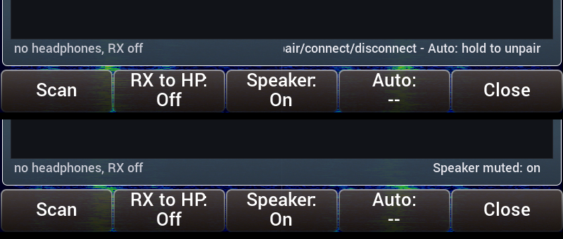
Scan 13s) para que veas que está
trabajando, y al terminar dice Scan done: N device(s) o
Scan done: nothing found.Pairing failed).| Botón de la app | Qué hace |
|---|---|
| Scan | Busca dispositivos (con cuenta regresiva) |
| RX to HP | Manda la recepción a los auriculares |
| Speaker | Apaga o prende el altavoz del equipo |
| Auto | Pulsando: prende/apaga el auto-conexión del equipo
elegido. Manteniéndolo: desempareja
(Unpair) |
| Close | Cierra la app |
Teclado: vinculá un teclado Bluetooth o conectá uno USB; se usa en el CW Keyboard y para navegar los menús.
El equipo se anuncia y responde el protocolo LAN de Icom, así que se comporta como un IC-705 y se puede manejar con wfview desde la PC: el waterfall, el audio del receptor y el control de frecuencia y modo, todo por la red.
Qué habla
| Puerto | Uso |
|---|---|
| UDP 50001 | Control (y el descubrimiento que hace wfview) |
| UDP 50002 | CI-V (el CAT de la radio por red) |
| UDP 50003 | Audio (LPCM 16 bits, mono) |
Paso 1 — Preparar la radio
Conectá el equipo a la misma red que la PC (Ajustes → WiFi).
Anotá la IP del equipo (pantalla de estado, o la lista del router).
Ajustes → wfview server → activar. Al activarlo
se escribe su configuración en
/mnt/wfview.conf:
enabled=1
user=x6200
pass=<tu clave>Si querés, cambiá el usuario y la clave desde el configurador web (página de wfview); la clave se guarda hasheada, no en texto plano. Anotá lo que pongas: es lo que vas a cargar en wfview.
Paso 2 — Instalar wfview en la PC
Instalá wfview desde wfview.org o el paquete de tu distribución. Sirve también cualquier cliente que hable el protocolo LAN de Icom.
Paso 3 — Registrar el equipo (el paso que importa)
Abrí wfview y andá a Settings → Radios.
wfview escanea la red y suele encontrar la radio sola: aparece listada como IC-705 (es lo que emula el equipo). Tocá Connect.
Si no aparece (hay routers que filtran el broadcast del descubrimiento), agregala a mano con Manual / Add:
| Campo | Qué poner |
|---|---|
| Radio Name | X6200 (el que quieras) |
| IP Address | la IP del equipo (paso 1) |
| Control Port | 50001 |
| Username | x6200 (o el que hayas puesto en el conf) |
| Password | la clave del wfview.conf |
| Model | IC-705 |
| CI-V Address | A4 (la del IC-705) |
Guárdala: queda registrada para las próximas veces, ya no hay que buscarla de nuevo.
Paso 4 — Usar
Si algo no anda
| Síntoma | Qué revisar |
|---|---|
| No aparece en la lista | Que esté en la misma red y que el firewall de la PC no bloquee UDP 50001–50003. Si el router no deja pasar el broadcast, agregala a mano (paso 3.3) |
| Conecta pero no suena | El dispositivo de audio elegido en wfview |
| No hay waterfall | Que el espectro esté activado en el cliente |
| Pide clave y no la sabés | Mirá /mnt/wfview.conf (o volvé a ponerla desde el
configurador web) |
| Se corta | Es UDP: usá WiFi con buena señal o cable, y evitá otras aplicaciones pesadas en el equipo |
Hay 8: los incorporados (IU1WXY, Outdoor, Classic, Outdoor-Negative y Vision) y los del X6100 que van como archivos (Holo, Material 3 y RS).
.json a
DATA/themes/ (tomá Holo.json como modelo) y
aparece en la lista. También puede ser una carpeta con
un theme.json adentro, como RS/.Accesibilidad: los temas están medidos para WCAG 2.1 AA: cada par de colores que se dibuja junto (texto sobre su fondo, bordes, el switch y el slider de Ajustes, la barra de estado) tiene contraste ≥ 4.5:1 para texto normal y ≥ 3:1 para texto grande, bordes e indicadores. Un chequeo automático recorre todos los pares declarados en cada compilación, así que un tema nuevo no puede quedar por debajo.
Una salvedad medida en el equipo: el medidor (S-meter) del tema RS queda en 2,4:1 contra el fondo real sobre el que se dibuja, por debajo del 3:1 que pide el criterio 1.4.11. Está reportado (issue #44) y se explica porque el color sale de la tabla compilada y no del archivo del tema. En los demás temas y elementos, el contraste es el medido por el chequeo.
DATA/qso_log.db; exportá el ADIF
y subilo a QRZ con tu cuenta.DATA.DATA.Está portado y apagado por defecto. Se activa
creando /mnt/use_drm y reiniciando. Si algo no se ve bien,
borralo y volvés al motor clásico.
Un transverter es un conversor que traslada otra banda a la que trabaja tu equipo. El X6200 es de HF y 6 m, así que con un transverter de 2 m (o de 70 cm, o de 4 m) podés trabajar esas bandas: el equipo sigue sintonizando en su banda de IF —casi siempre 28 MHz (10 m)— y el transverter hace el resto. Es la forma clásica de subir a VHF/UHF con un equipo de HF.
Cómo lo maneja la GUI. Vos ves y sintonizás la
frecuencia real de la banda objetivo (por ejemplo
144.300) y el firmware, por dentro, pone el hardware en la
IF (28.300). Se ve en el propio log:
Radio set vfo 0 freq=144300000 (28300000)
^ la que ves ^ la que sintoniza el equipoConfiguración: Ajustes → Operación → Transverter. Hay 3 transverters cargados, cada uno con tres campos:
| Campo | Qué es |
|---|---|
| From / To | La ventana de la banda objetivo en la que el shift se aplica (en MHz enteros) |
| Shift | La diferencia entre la banda objetivo y la IF:
frecuencia objetivo − IF |
Los valores de fábrica suponen IF de 28 MHz (las tres bandas típicas de un equipo de HF):
| From | To | Shift | Banda |
|---|---|---|---|
| 70 MHz | 72 MHz | 42 MHz | 4 m |
| 144 MHz | 150 MHz | 116 MHz | 2 m |
| 432 MHz | 438 MHz | 404 MHz | 70 cm |
Para tu transverter: si el tuyo tiene la IF en 28
MHz, los valores ya sirven; si no, poné
Shift = banda objetivo − IF. Por ejemplo, un transverter de
2 m con IF en 50 MHz usa Shift = 94. Cuando la frecuencia
en la que estás cae dentro de la ventana
From..To el shift se aplica; fuera de ella no
pasa nada (shift 0) y el equipo vuelve a la banda de HF.
Ojo con dos cosas: los tres campos se editan en MHz enteros (no hay decimales), y la ventana tiene que cubrir el segmento que vas a usar. Si sintonizás fuera de la ventana, el equipo trabaja en su frecuencia real (la IF), así que no vas a ver la banda objetivo.
root. Cambiá la
contraseña (la de fábrica es conocida). Los logs están en
DATA/app_logs/x6200_log_*.txt y se escriben al cerrar la
GUI.| Síntoma | Qué hacer |
|---|---|
| Sólo el logo y no arranca | Casi siempre la actualización cortada a mitad o la microSD mal asentada. Revisá el adaptador; si sigue, grabá la imagen completa. |
| Arranca el firmware viejo | La tarjeta no está siendo leída: revisá el adaptador y el contacto. |
| “No medium found” al grabar | La microSD no está dentro del adaptador. |
| No se oyen los anuncios | Voice mode en Off, o estás transmitiendo. |
| Un tema no aparece | Tiene que estar en DATA/themes/ con el JSON
válido. |
| El clúster no muestra spots | Revisá servidor, indicativo y filtros; una línea de prueba necesita
la hora HHMMZ. |
Sin espacio en DATA |
Borrá rec/, capturas viejas o los
backup_*.tgz. |
| Ajustes raros tras actualizar | Restaurá el respaldo de params.db o borralo (perdés los
ajustes, no el log). |
| No encuentro una app | Están todas en las 6 páginas APP (tecla APP); la tabla está en la sección 6. |
| El Bluetooth no encuentra los auriculares | Tienen que estar en modo vinculación y desconectados del teléfono: si el teléfono está cerca vuelven a él y dejan de anunciarse. |
Sale Pairing failed |
Lo mismo: ponelos en vinculación y reintentá (la app avisa cuando falla, antes quedaba muda). |
| No se oye la radio en los auriculares | Pulsá RX to HP en la app de Bluetooth y subí el volumen con la rueda del equipo. |
| Se escucha doble (altavoz y auriculares) | Pulsá Speaker en la app de Bluetooth. |
| Subís el volumen y no cambia nada | Defecto conocido y reportado (issue #30): el ajuste
se guarda en params.db pero no se aplica al audio. No es tu
equipo: está en estudio. Mientras tanto, la única forma de subir el
nivel es la ganancia (Ajustes → Audio, Play gain,
hasta +10 dB). |
| La GUI se reinicia cada medio minuto | Defecto conocido y reportado (issue #19): pasa después de usar el CW Trainer (o las apps de CW). Salí de la app y reiniciá el equipo; no es una falla del hardware ni del suministro. |
| Partición | Contenido |
|---|---|
BOOT (32 MB, vfat, arrancable) |
zImage, device tree y boot.scr |
rootfs (512 MB, ext4) |
El sistema y la GUI |
DATA (vfat, etiqueta DATA) |
Tus datos: ajustes, log, temas, mensajes, grabaciones y logs |
| Archivo | Qué es |
|---|---|
DATA/params.db |
Todos los ajustes |
DATA/qso_log.db |
El log de contactos |
DATA/themes/ |
Tus temas |
DATA/msg/ |
Mensajes de voz (WAV) para el CQ de voz |
DATA/rec/ |
Grabaciones y capturas |
DATA/app_logs/ |
Logs de la GUI |
Esta ROM es el trabajo de mucha gente, encadenado. En orden de abajo hacia arriba:
| Quién | Qué aportó |
|---|---|
| Xiegu | El hardware X6200 y la documentación del CAT |
| Belousov Oleg (R1CBU) | El firmware alternativo original (X6200 y X6100): la arquitectura, la GUI LVGL, el CAT, los modos digitales. La base de todo |
| Georgy Dyuldin (R2RFE) — gdyuldin | El port del firmware de R1CBU al X6200 con buildroot |
| iariap (LU2DSX) | El fork base (iariap/x6200_gui y iariap/AetherX6200Buildroot) y esta ROM: el port de las funciones del X6100 al X6200, las correcciones y este manual |
| IU1WXY | El firmware del X6100 (IU1WXY/X6100-IU1WXY) del que se portaron las funciones: aviso de actualización, S-meter, plan de banda IARU, grabación de pantalla, Bluetooth (CAT, auriculares y teclados), wfview, configurador web, FT8/FT4, WSPR, JS8, SSTV, WeFax, NavTex, RTTY, CW Keyboard y Trainer, clúster DX, Field Ops, temas, GPS y los anuncios por voz |
| Adrian Grzeca (SQ5FOX) | Aportes al firmware base |
Y las bibliotecas y proyectos de software libre con los que se construye:
| Proyecto | Para qué |
|---|---|
| LVGL | La biblioteca gráfica de toda la interfaz |
| Buildroot | La compilación cruzada y el armado de la imagen |
| Dave Gamble y colaboradores (cJSON) y jansson | JSON (clúster, temas, web, control remoto) |
| Equipo de wfview | El protocolo y el cliente para controlar el equipo desde la PC |
| Jonathan Duddington y el equipo de espeak | El sintetizador de voz de los anuncios |
| liquid-dsp, FFTW, GSL | Procesamiento digital: espectro, modems y filtros |
| PulseAudio, ALSA, BlueZ / bluealsa, Speex, mpg123, LAME, libvorbis | Audio y Bluetooth |
| OpenSSL, libcurl, NTP, NetworkManager, wpa_supplicant, OpenSSH | Red, hora, seguridad y SSH |
| e2fsprogs, dosfstools, util-linux, parted | Particiones y sistemas de archivos |
| Y todos los demás paquetes de software libre del buildroot | Lo que hace que el equipo ande |
Licencias: el firmware es LGPL-2.1-or-later (la GUI y los archivos portados conservan su atribución original en sus cabeceras); cada biblioteca mantiene la suya.
Documento generado desde
docs/NEW_FEATURES.mdydocs/X6100_FEATURE_GAP.md, con capturas reales del firmware (banco de pruebas y equipo). Las secciones de las aplicaciones (nombres, botones de cada pie y ajustes que usan) se verificaron además contra el propio código (src/buttons.cpp,src/dialog_*.cysrc/params/params.c), no sólo contra la documentación previa.